Listas a tu manera
Importá enlaces M3U o M3U8, servidores Xtream con usuario y contraseña, archivos locales y TXT con varios candidatos.
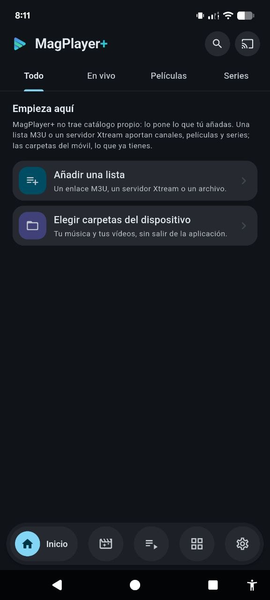
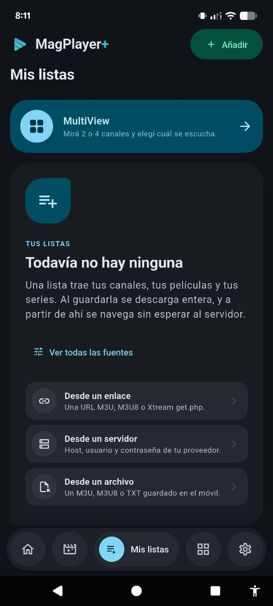
Mis listas · MóvilCentro multimedia open source
MagPlayer+ fue creada desde cero para reunir listas IPTV y archivos del dispositivo sin tratar al móvil, la televisión y el escritorio como la misma pantalla estirada.
Funciones actuales
Estas capacidades están respaldadas por pantallas, controladores y servicios presentes en la aplicación actual.
Importá enlaces M3U o M3U8, servidores Xtream con usuario y contraseña, archivos locales y TXT con varios candidatos.
Los canales conservan sus categorías y EPG; películas y series aparecen en un catálogo con temporadas y episodios cuando la fuente los ofrece.
Indexá música y vídeos por carpetas, álbumes y artistas. Gestioná favoritos, playlists, búsqueda y cola de reproducción.
ExoPlayer y LibVLC trabajan en Android y Android TV. Linux usa mpv. El modo automático cambia al respaldo si el motor activo falla.
Abrí dos o cuatro canales compatibles a la vez. Cada ventana conserva su motor y sólo la ventana seleccionada emite audio.
Grabá un canal compatible en Android mientras seguís usando el dispositivo. Al terminar, la aplicación indexa el archivo entre tus vídeos.
Encontrá dispositivos MagPlayer+ en la misma red, controlá la reproducción y transferí la sesión con emparejamiento visible.
Aplicá control parental con PIN y detección de contenido. Elegí pistas y personalizá tamaño, posición y sincronización de subtítulos.
Tres experiencias
Cada modo tiene navegación y controles propios para su distancia y forma de uso.
Interacción táctil, navegación inferior, biblioteca completa y control de otros dispositivos.
Foco visible, navegación por D-pad, controles a distancia y reproducción independiente.
Diseño de escritorio, teclado y mouse, reproducción con mpv y participación en Connect para distribuciones basadas en Debian.
Pantallas actuales
Interfaz real de la versión actual, organizada por el recorrido de uso y adaptada a cada formato de pantalla.
Móvil
Navegación inferior, controles táctiles y las mismas fuentes disponibles desde el teléfono.
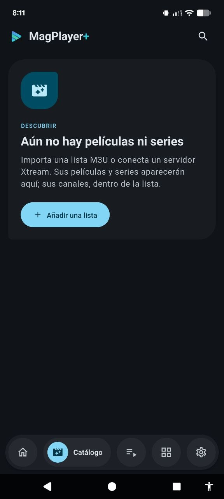
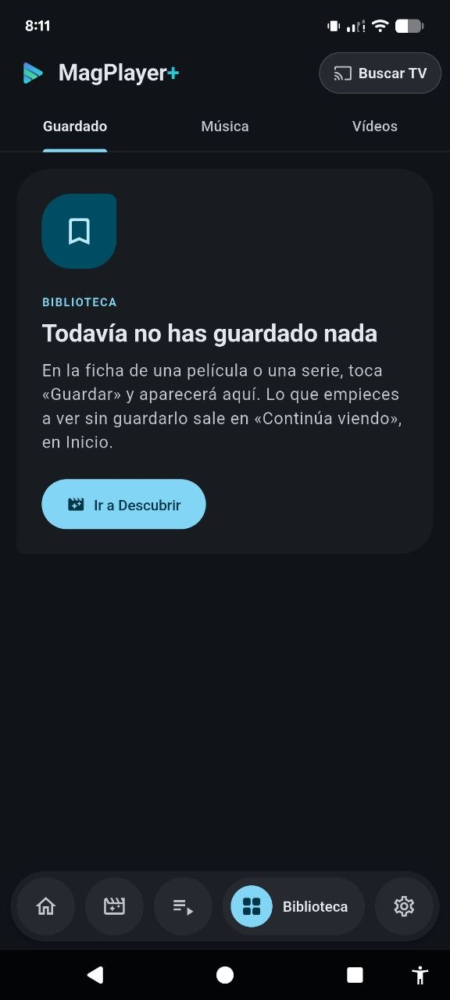
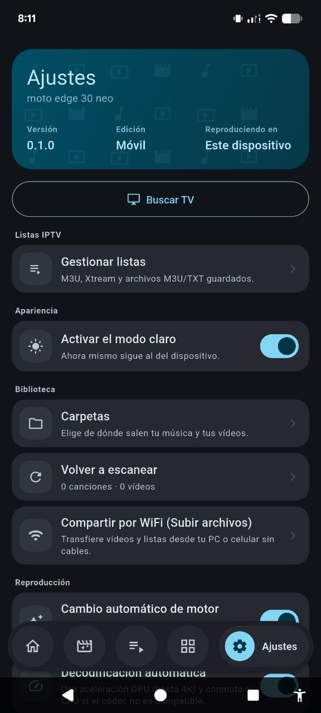
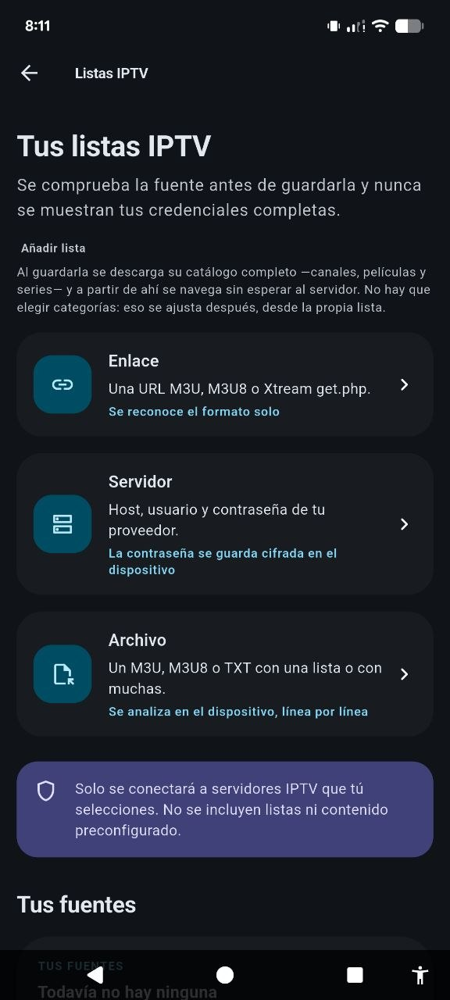
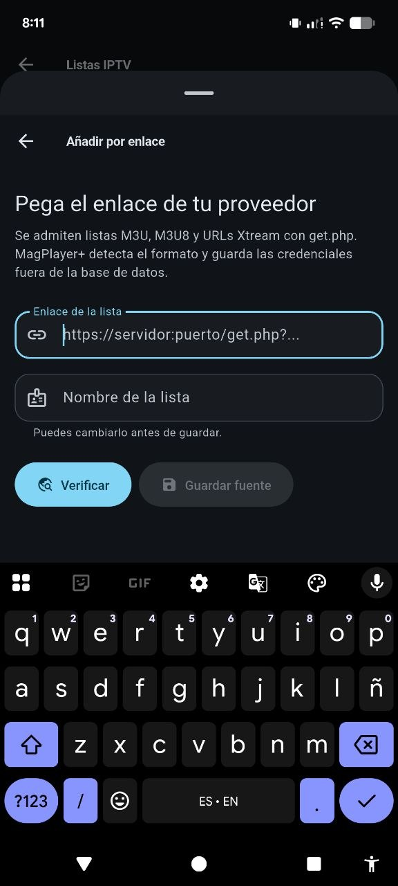
Escritorio y TV
Vistas horizontales para Linux y pantallas grandes, con navegación lateral y contenido legible a distancia.
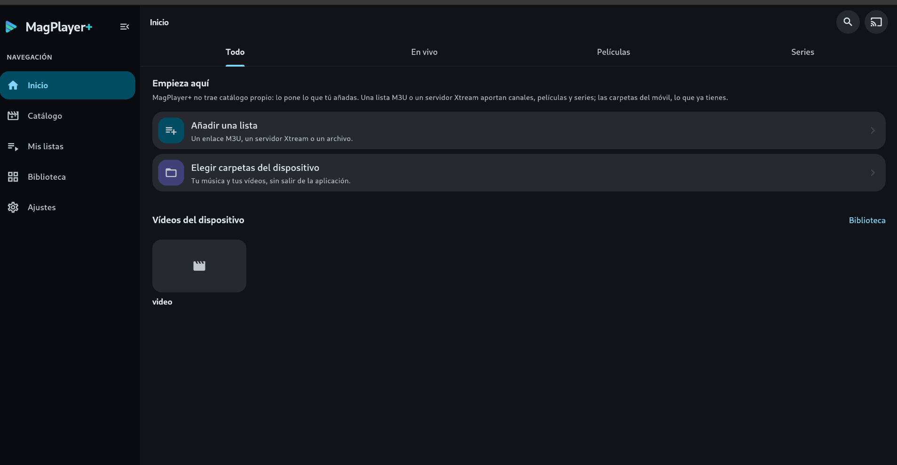
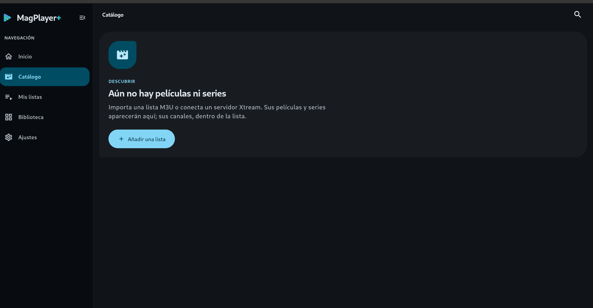
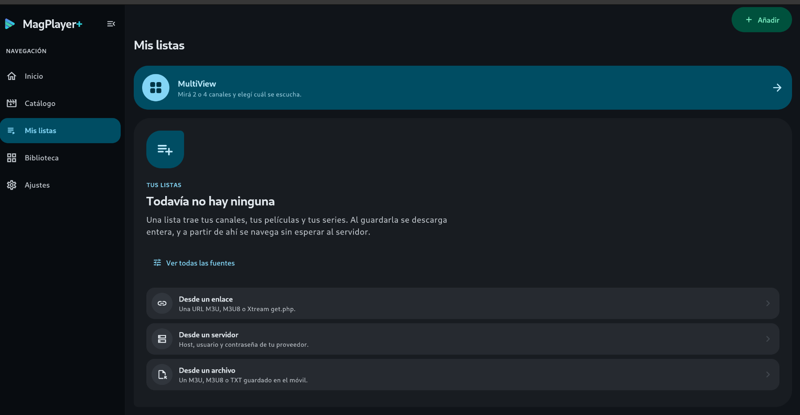
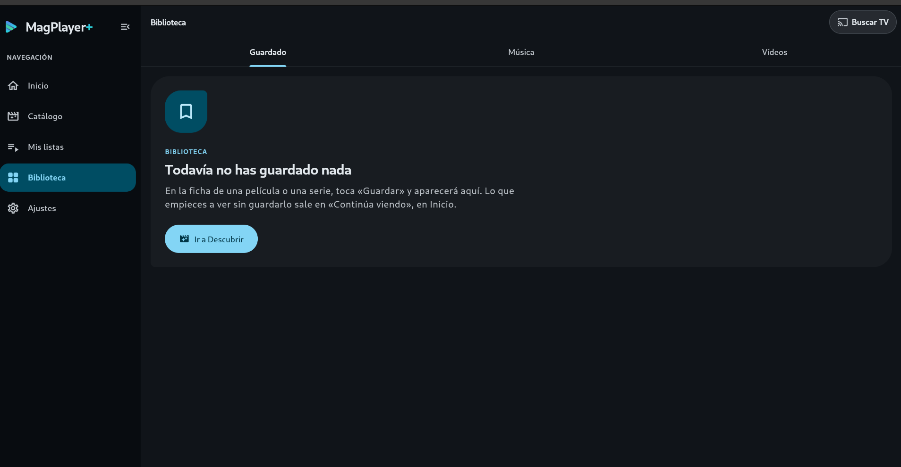
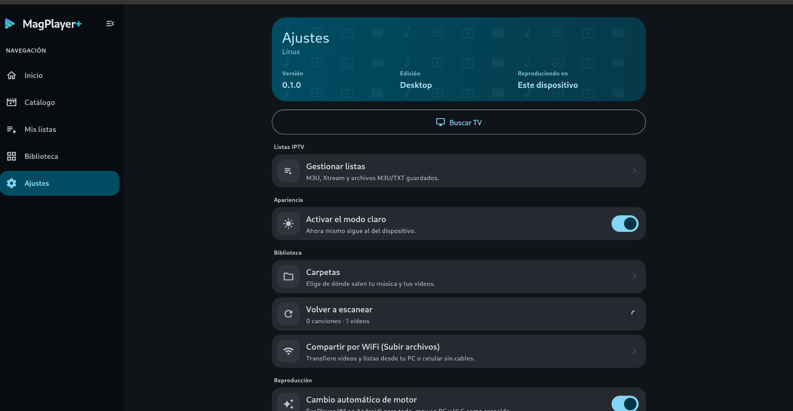
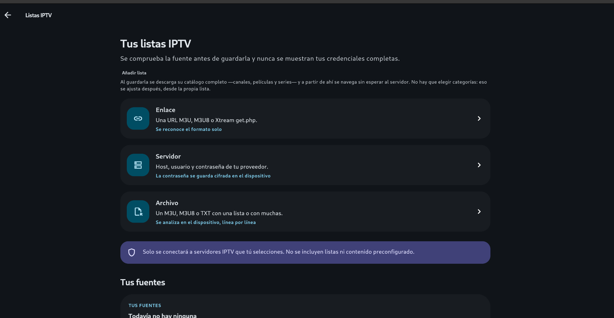
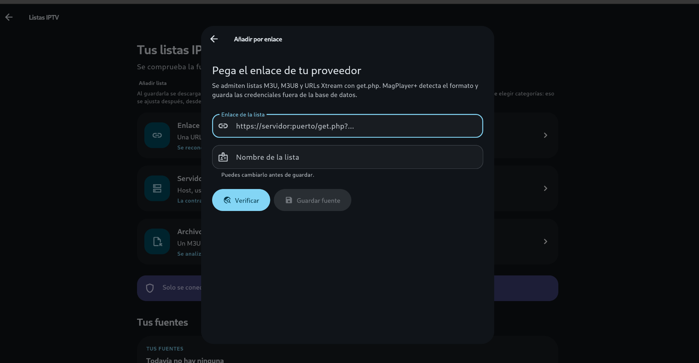
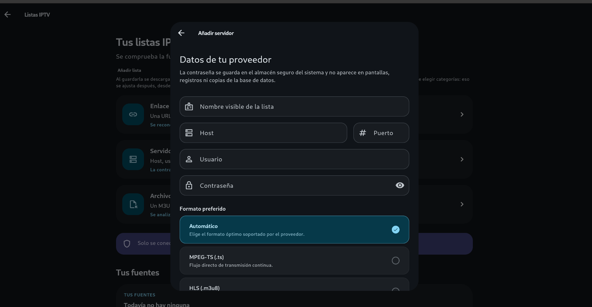
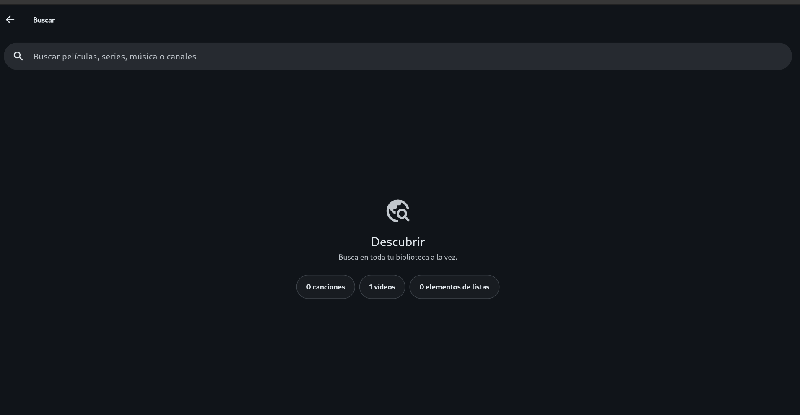
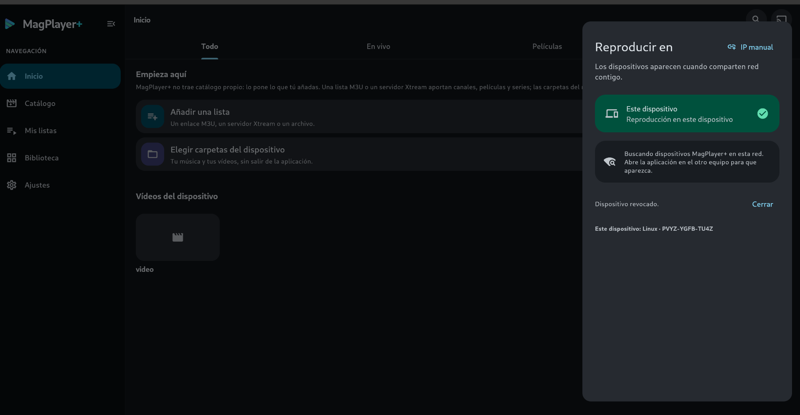
MagPlayer+ actual
Sin listas preinstaladas, sin vender fuentes y sin alojar contenido de terceros.